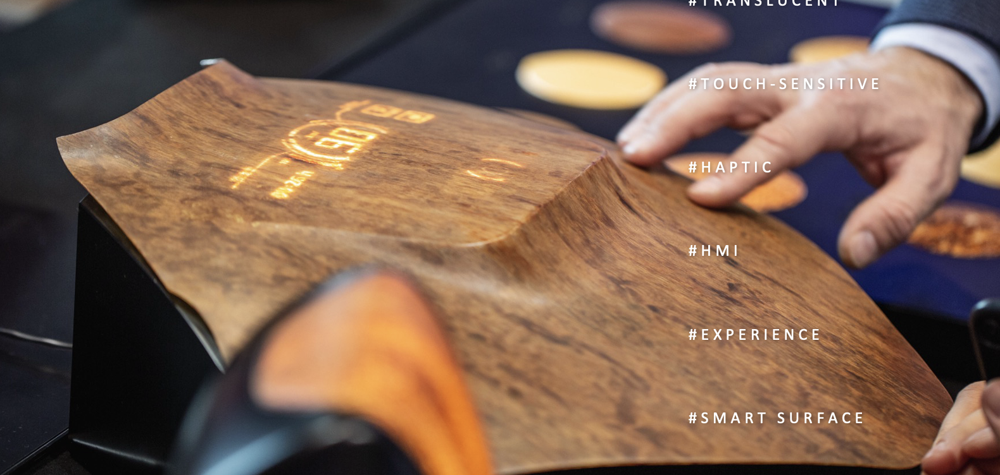
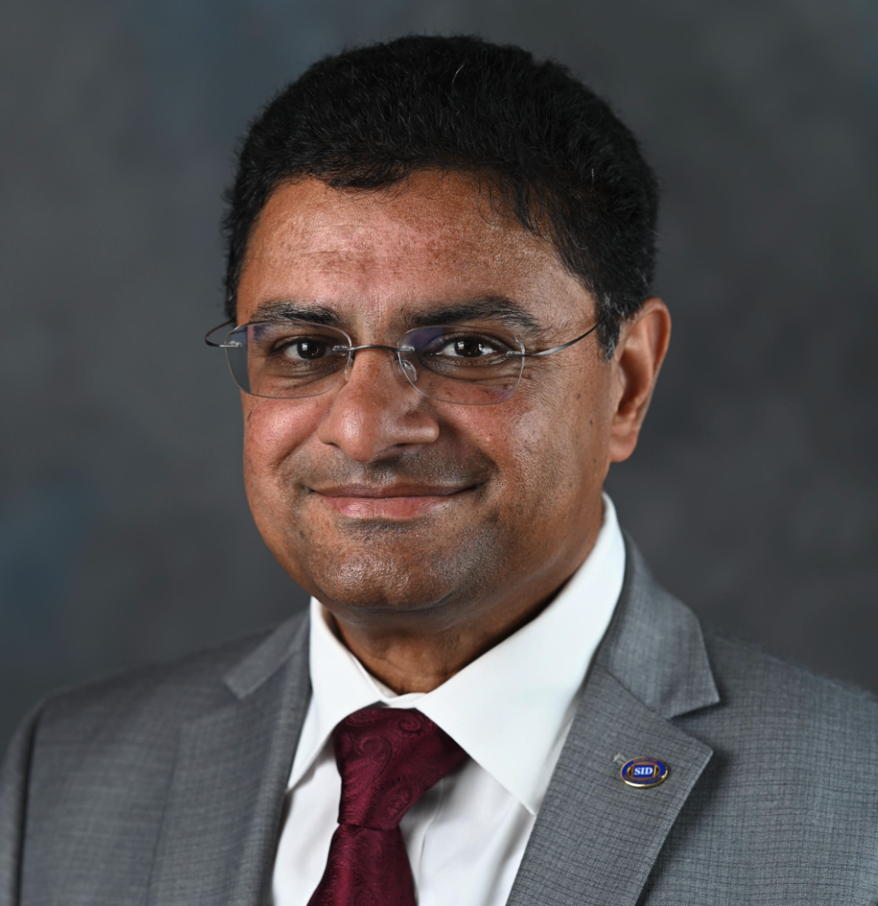

Market-entry strategy
Define your target market, sharpen your positioning, and build a go-to-market approach suited to your technology and customers.
DEEPTECH · NORTH AMERICA
Turn technical potential into commercial opportunity. Fogatel helps international deeptech companies build their market, relationships, and business in North America.
European innovation.
North American opportunity.
01 / EXPERTISE
For international deeptech companies, especially from Europe, entering North America takes local insight and the right relationships. Fogatel helps connect strategy with hands-on commercial development.
Define your target market, sharpen your positioning, and build a go-to-market approach suited to your technology and customers.
Identify strategic partners and early customers. Build the relationships that move a promising technology toward commercial opportunity.
Develop qualified opportunities, support commercial discussions, and move partnerships and licensing agreements forward.
Introductions to independent finance, legal, HR, and marketing professionals, with availability, scope, and terms agreed separately for each engagement.
Meet the networkTECHNOLOGIES WE WORK WITH
02 / SELECTED WORK
Experience across IP licensing, fabless semiconductors, and full-stack products. A selection of Fogatel engagements in market strategy, sales, and partnerships.

A European startup developed a sustainable, transparent, and touch-sensitive wood with wide applications in smart surfaces—from automotive to luxury interiors.
Fogatel defined a go-to-market strategy and led business development efforts with top CE OEMs including Bose, Microsoft, Amazon, Google, Apple, Facebook, Sonos, and Tesla—opening doors to key partnerships and pilot projects.
A French company developed an innovative touchscreen solution for consumer electronics.
Fogatel led North American business development and sales, licensing the technology to a semiconductor vendor and a tier-one OEM, and introducing it to leading brands like Google, Microsoft, Dell, and Samsung.
A company developed a scalable manufacturing process for silver nanowires, enabling the production of transparent and flexible electrodes for next-generation touchscreens, OLEDs, and OPV devices.
Fogatel supported sales growth in emerging applications, leading to multi-million-dollar revenue and over 10 design wins with major OEMs including 3M, Lenovo, HP, Dell, Google, Amazon, and Microsoft.
A company pioneering scalable micro-LED displays that integrate high-luminance LEDs with silicon transistors on a single wafer using standard semiconductor processes.
Fogatel led business development efforts. We secured and negotiated a development and licensing agreement with a leading global display manufacturer, positioning the company for commercial success.
A company developing next-generation sensory technology that enables machines to feel touch—paving the way for seamless collaboration between humans and robots.
Fogatel helped redefine the go-to-market strategy, focusing the product offering on a specific high-impact application.
Fogatel supported a UK startup developing the world’s first secure temperature sensor, combining cybersecurity and sensing in a single chip.
We crafted their go-to-market strategy and facilitated introductions to strategic partners in semiconductors, IoT, and industrial automation.
03 / FOUNDER & NETWORK
Fogatel is led by François Jeanneau. When an engagement calls for additional expertise, clients can be introduced to independent specialists.
FOGATEL / FOUNDER & CEO
Bringing technology, people, and markets together.
François brings over 20 years of leadership experience in technology commercialization, business development, and startup growth. His experience spans advanced materials, displays, IoT, photonics, semiconductors, and clean technologies.
Through Fogatel, he helps deeptech companies develop their North American market strategy and build commercial relationships.
Connect with François on LinkedInThese professionals operate independently of Fogatel and are not employees of the company. Introductions depend on client needs; availability, scope, and terms are agreed separately for each engagement.
Independent professional
Consulting CFO with experience in financial planning, cash management, and investment financing for venture-backed startups.
LinkedIn
Independent professional
CEO of Marketer International Inc. and former CMO of E Ink, with extensive experience in displays, materials, and technology marketing.
LinkedInIndependent professional
Entrepreneur-turned-lawyer supporting technology startups with company formation, financing, contracts, and corporate governance.
LinkedInIndependent professional
HR consultant supporting Bay Area startups and established businesses, with a background in employment and corporate law.
LinkedIn04 / START A CONVERSATION
Tell us about your technology, your market, and where you want to go.
Connect on LinkedIn